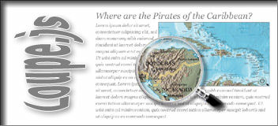

|  |
Loupe.js allows you to add photorealistic loupes (magnifier) to images on your webpages. The design is changeable by use of an image editing program. It uses unobtrusive javascript to keep your code clean. It works in all the major browsers - Mozilla Firefox 1.5+, Opera 9+, Chrome, IE 6+ and Safari. On older browsers, it'll degrade and your visitors won't notice a thing. |
Download "loupe.js" and include it into your webpages HEAD section.
<script type="text/javascript" src="loupe.js"></script>
To add a loupe just set the event onload="loupe.add(this);" to an div surrounded image.
<div>
<img id="..." onLoad="loupe.add(this);" src="..." width="356" height="205" alt="...">
</div>
loupe.defaultResopath = 'images/loupe/'; //STRING path to image resources (loupe.png|lense.png|icon.png)loupe.defaultVisible = false; //BOOLEAN visiblity on startuploupe.defaultRadius = 100; //INT/FLOAT 0-100 lense radius (%) of loupe min(height/width)loupe.defaultXpos = 8; //INT/FLOAT 0-n (px) horizontal offset of the lenseloupe.defaultYpos = 6; //INT/FLOAT 0-n (px) vertical offset of the lenseloupe.defaultXview = 0; //INT/FLOAT 0-n (px) horizontal start positionloupe.defaultYview = 0; //INT/FLOAT 0-n (px) vertical start positionloupe.defaultCrosshair = false; //BOOLEAN show crosshairloupe.defaultOpacity = 25; //INT/FLOAT 0-100 (%) crosshair opacityloupe.defaultColor = '#0000ff'; //STRING crosshair colorloupe.defaultName = ''; //STRING (canvas name|id).add(image[, options]);image == div surrounded imageoptions e.g. {visible: true, opacity: 25, ...}resopath == STRING Default: 'images/loupe/'visible == BOOLEAN true or false Default: falseradius == INT/FLOAT 0 - 100 Default: 100xpos == INT/FLOAT 0 - n Default: 8ypos == INT/FLOAT 0 - n Default: 6xview == INT/FLOAT 0 - 100 Default: 0yview == INT/FLOAT 0 - 100 Default: 0crosshair == BOOLEAN true or false Default: falseopacity == INT/FLOAT 0 - 100 Default: 25color == STRING Default: '#0000ff'name == STRING Default: ''.toggle(canvas.id);.remove(canvas);<img onload=".add(this);" ...>.add(document.getElementById('img'));if(typeof $=='undefined') {function $(v) {return(document.getElementById(v));}}.add($('img'), {name:'magnifier', resopath:'loupes/'});<button type="button" onclick=".toggle('magnifier');"> toggle </button>alert('loupe: '+.version+' ('+.released+')');.remove($('magnifier'));Shows what "loupe.js" does.
In older browsers, the script degrades and your visitors won't notice a thing.
Loupe.js is distributed under this LICENSE. License permits free of charge use on non-commercial and private web sites only under special conditions (as described in the license). This license equals neither "open source" nor "public domain". There are also Commercial Software Licenses available.
Images used are copyrighted and are used for demonstration only.
cvi.netzgesta.de also visit CVI-lab, S5 Reloaded and AJAX-FilmDB